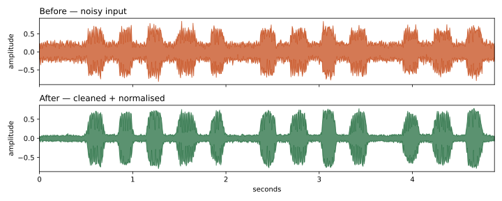

Free, local voice/audio cleanup: trim silence, remove background noise, normalise loudness. No upload, no account, no subscription. GitHub repo
Sample: synthetic voice-like syllables + white noise, rumble and 50 Hz hum
(fully synthetic — no real person's voice). Measured with ffmpeg
loudnorm (ITU-R BS.1770), verified 2026-11-20.
| Measurement | Before | After |
|---|---|---|
| Integrated loudness | −15.45 LUFS | −15.99 LUFS (target −16) |
| Noise floor | −20.22 dBFS | −30.54 dBFS (−10.32 dB) |
| True peak | −1.36 dBFS | −1.95 dBFS (no clipping) |
| Duration | 4.88 s | 4.88 s |
| RMS level | −15.44 dBFS | −15.32 dBFS |
Word-preservation check: in voiced regions the enhanced audio correlates 0.975 with the known-clean reference; gap (between-words) RMS fell from 0.099 to 0.033 — noise went down, words stayed.

git clone https://github.com/mrabr381/local-audio-enhancer.git
cd local-audio-enhancer
python -m venv .venv && source .venv/bin/activate
pip install -r requirements.txt
python scripts/make_sample.py
python -m audio_enhance --input sample_data/noisy.wav --out sample_output/scripts/make_sample.py regenerates them.
The files below are the text-only record: the full report, the waveform
data, and the waveform image.